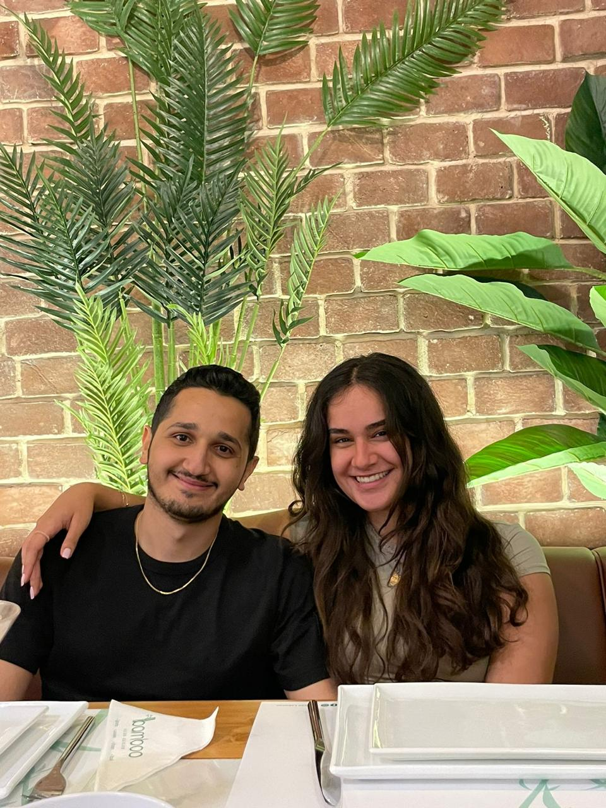

This page is a place to vent. I lost my little sous. But I still love her. I want her
I yearn for u. I ache for u. I need u. I love u. I adore u. I want u. I miss u.
I shine with u. I joy with u. I am fulfilled with u. I laugh with u. I love with u. I live with u. I smile with u.
I cry without u. I hurt without u. I die without u. I hate without u. I sob without u. I'm empty without u.
My mind tells me it's a bad idea. But my heart aches for you. It yearns for you. It needs you, it wants you, it loves you, it cherishes you. My heart feels so empty without you. My heart is telling me I am stupid, I am a fool. How could I do this to you. How could I leave you. I regret everything I did. I see now that I was acting childishly. I was not listening to you. Or listening but not acting. Oh how I mistreated you my beautifiul soul. My lover who brought me joy. My anchor who brought me peace. My sous who brought me laughs. My flower who brought me comfort. My queen who brought me warmth. My everything who showed me what true love is. I think about you every single day. I cry about you every time I think about you. Take away everything I have and I'll be fine. But take away my one true love, and I am broken. Well, I am now broken, and the irony is that I have committed the crime. I have died by my own hands. I broke myself. Not only that, but I also hurt the one I love most. The one who is the piece that completes my puzzle. I can look all over the world, but I shall never find a piece like you, for it does not exist, has never existed, and shall never exist. You are the rarest thing in this existence, in this universe and the next. You are a gem that holds an immeasurable value, a diamond that shines like no other, a light in an ocean of darkness, a hope in a world of despair, a smile in times of sadness. And I on the other hand, am but a man, or even a child who was lucky enough to have graced your presence. Lucky enough to breathe the same air you breathe. Lucky enough to have found you. Lucky enough to have received your love. Lucky enough to have kissed you. Lucky enough to have had the chance to keep you forever. But I was unlucky enough to be stupid. So stupid to have left you. Everything I could ever want was secured. But I released my grip, letting go of the light, allowing the darkness that you pushed away to consume me. I am not swallowed up by constant regret and sadness. What good is a pen without its paper, a bow without its arrow, a magician without his tricks, a knight without his sword, or a king without his queen, a man without his heart. You may have moved on, especially after everything I did, but I will never move on. My heart will never allow itself to let go of its missing artery, the one who keepsnit alive and makes it feel. If you find it in your heart to forgive me, if you find it in your heart to take me back, I will move heaven and earth to make you the happiest person on this planet, the happiest living being in any plane of existence.
I can't even call you cute names anymore. I think you moved on. Or at least you pretend to. But everytime I call you my love, my sous, or my amar, I receive rejection, my heart gets pierced by sword of a thousand edges. Or a thousand swords with the sharpest edges. Or both. But I can't tell you how I really feel, I don't want to ruin things.
Some summer memories
MACAM


Your bday
Bamboo


Laklouk
å
Anthonys
OUR LITTLE SOUSIES